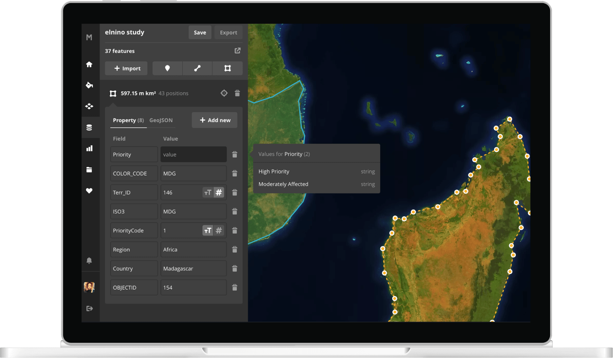
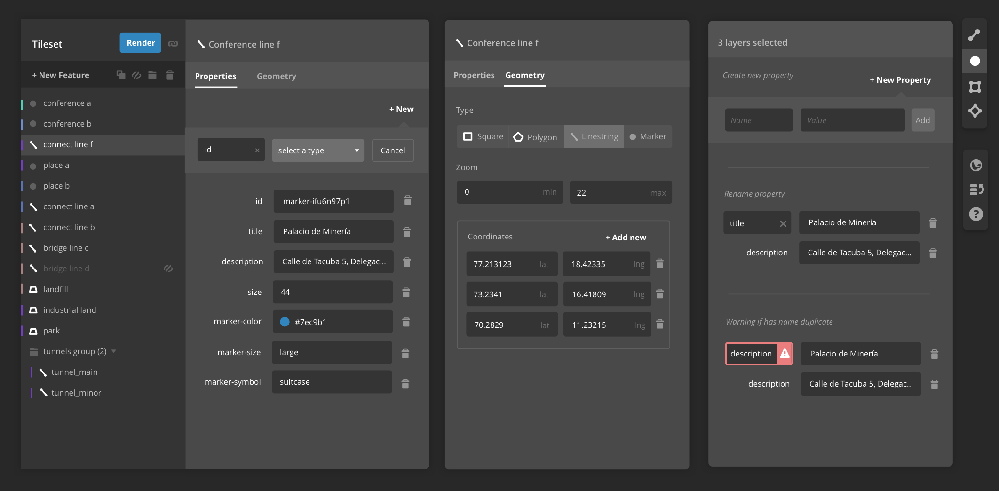
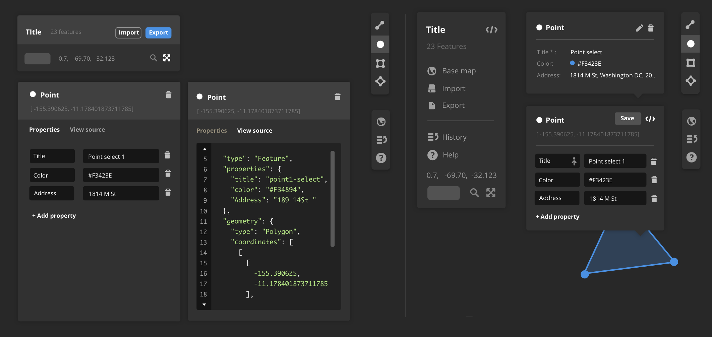
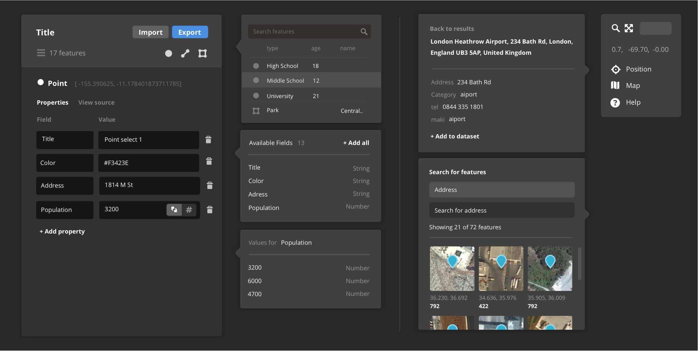
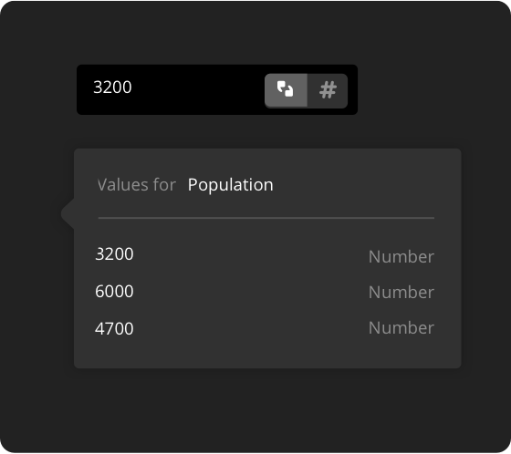
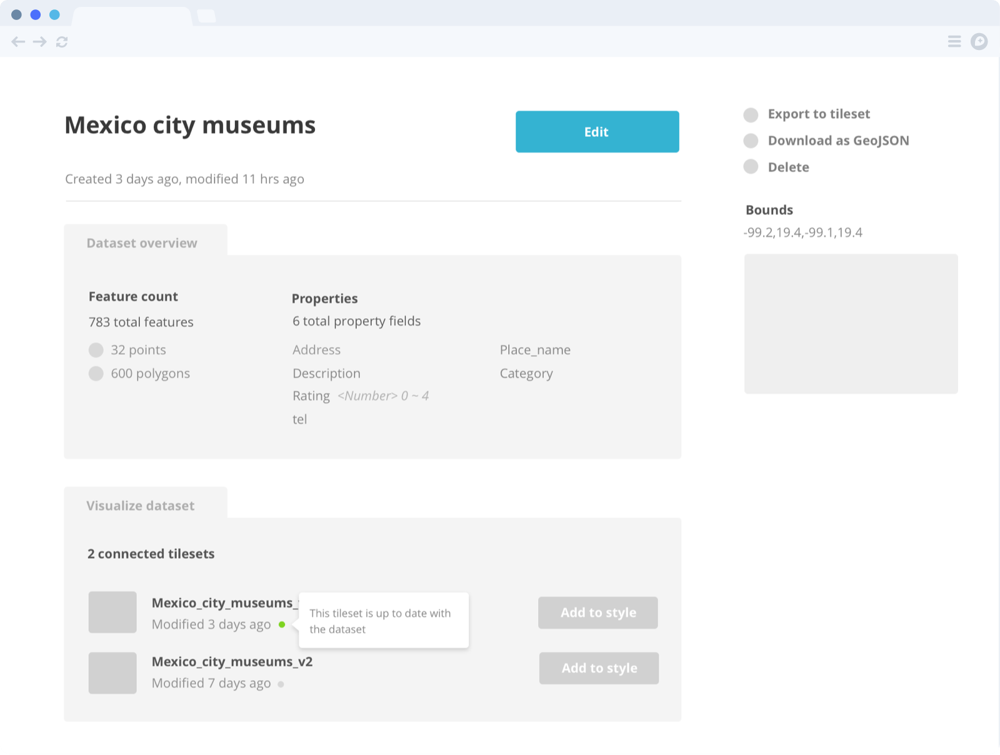
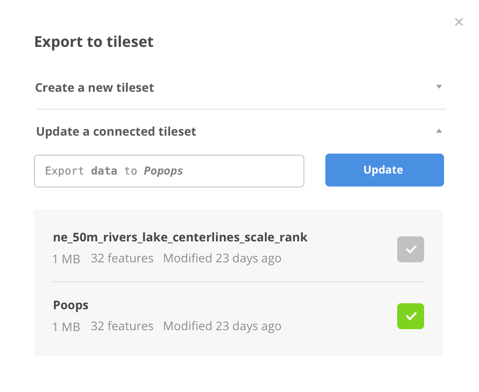

Maya Gao
Case Study
Dataset Editor
My Role
UI design & dev
Release
August, 2016
Team
Matthew Whittemore (enginnering)
Saman Bemel-Benrud (enginnering)
David Clark (enginnering)
Tom MacWright (enginnering)

Mapbox Studio dataset editor provides a simple way to create and modify geospatial data. The editor stores data as GeoJSON files containing a list of features with coordinates, geometry and property information. Users can draw, import, edit and manage feature. They can also trace features from satellite imagery. Similar to the style editor, we wanted to the tool to be accessible to not just GIS professionals, but also designers who want to create a data visualizations or developer who needs custom data for their apps.
The Challenges
The most difficult part of this project is definitely prioritizing features, deciding which to build for the initial release. We wanted to provide a foundation for more complicated features down the line and maintaining a balance between simplicity and flexibility. First we identified four main tasks for the interface: import, draw, edit, and export. Then we validated if the design can make performing those tasks easier through user testing. The main design challenges are:
- Shared property fields. Feautures inside one dataset usually share the same set of property fields. However we don't store such information in GeoJSON files.
- Search. It was difficult to filter the dataset and find specific features.
- Precision. Spatial data is precise and we want to give users full control when it's needed.
Dataset Editor Iteration 1 March, 2016

Iteration 1
Multi-select and Feature List
In early iterations of the data editor, the UI consisted of a feature list view on the map, and a map view on the right. Since we are showing a list, every feature needs a unique identifier. This introduces a problem because those dataset are stored and saved as GeoJSON files. A concept like "name" does not really exist in GeoJSON. So if we decided to move forward, this will add significant burden to implementation.
Another problem I tried to tackle here is edit multiple features at the same time. Same as the feature "names", the concept of "shared property fields" also don't exist in GeoJSON. Every feature can have a list of different property fields.
So we decided it's time to take a step back and think about if we wanted to adopt a UI that's similar to the GeoJSON structure, or diverge from it more dramatically. During my first user testing, the tester was indeed having lots of trouble finding features. But I noticed that she associated one feature with mutiple properties, such as both location and color, not just one single "name". Moreover, she identifies features through searching them directly on a map in the context of the entire dataset, not through names. Tom MacWright suggested removing the list and multi-select completely and really simplifying the UI to focus on the main tasks: draw, import, and edit. The user testings convinced me that is the right thing to do. And I'm grateful we did that early on.
Dataset Editor Iteration 2 June, 2016

Iteration 2
Property and Code Editor
The second major iteration focused on simplifying and refocusing. Without the feature list panel, there's a lot more space to directly draw on the map. By removing multi-select for property edit, we can focus on refining single feature edit. The "name" concept was completely removed in this iteration. Instead wen simply used geometry type plus coordinates to represent the feature. Matthew Whittemore introduced typehead to the property field input so users can see all existing fields available inside the dataset when they start typing. I also experimented with the position of the feature editing panel: an achored panel pinned to the left of the editor, or a popover that only shows up when user clicks on the feature on the map. We went forward with the former solution for simlicity and consistency.
A big change we introduced here is the code editor. Users can access it through the
view source tab. This change allows for more precise control over the data, especially when people want to copy-paste coordinates information. The source code there is in GeoJSON format and completely reflected how the data is represented in the API level. This is a good example of how we retain flexibility and show complexity only when it's needed. Another main focus of this iteration is draw interactions. How can we indicate to users they can start drawing? How do we indicate they can close a shape? What should the interaction be when they want to modify a node of the shape? I sketched out some ideas and worked with Matthew to implement them in the framework the data editor uses for this interaction: mapbox-gl-draw.

Draw interactions
Dataset Editor Iteration 3 August, 2015


Different layer states
Clear, distinguishable states for nested, selected, and hidden layers.
Different layer states
Clear, distinguishable states for nested, selected, and hidden layers.

Property categories
Clear, distinguishable states for nested, selected, and hidden layers.
Iteration 3
Single Property Editing and Feature Search
With almost all the basic functionalities in place, we started more aggressively user-testing the tool every week. User testings at this stage helped us identify intricate problems such as confusion around values types (number/string). We were able to solve many of the problems through introducing very minimum UI changes.

Listing pages
I designed several versions of the style and tileset listing page. The tileset page also includes to data upload status popover.
Modals

Dataset export modal

New dataset modal
What I have learned
Test early and often. Sometimes the problems are so small and detailed, I would never have believed they existed if I didn't sit in room with another person and watch them struggling with it. User testing prevents me from relying too much on what have been done in the past and instead helps me focus on design practical systems that support interactions.
Gain perspectives from disagreements. I often became angry when I can't get other people to like my work or agree with my proposals and I got frustrated with those human interactions. But design is really a team team effort, especially for a complicated product with many moving parts. Arguments can often bring in new perspectives. I don't need to agree with all of them but I have to understand them. It's less about winning all the battles, and more about realizing that I can not produce the best work without the people around me.
Maya Gao is a product designer and developer working for Mapbox in Washington D.C. Previously she was a designer at Lonely Planet and Upstatement.
Back